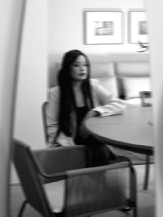

Aline Costa
Arquiteta & Game Designer
Hello, world!
Meu nome é Aline. Sou formada em Arquitetura e Urbanismo pela Universidade Federal de Minas Gerais e em Game Design pela mera curiosidade, haha!
Por que quero ingressar na área de tecnologia?
Para além das questões relacionadas à flexibilidade de trabalho e qualidade de vida, tenho três objetivos principais que despertam o meu interesse no ramo. O primeiro deles é participar ativamente de projetos na área de desenvolvimento de jogos eletrônicos. Nesta área, tenho a intenção de atuar tanto na proposta de resoluções práticas - programação - quanto na parte de soluções gráficas (lev design). Pretendo dar continuidade aos meus jogos autorais e, quem sabe, começar novos. O meu segundo objetivo é buscar alternativas criativas que tornem a vivência profissional de minha área de atuação corrente (Arquitetura e Urbanismo) mais tangível/prática/simples. Penso em fazer isto por meio do desenvolvimento de ferramentas de organização e de passo-a-passo para construção de repertório profissional. Por último, mas não menos importante, tenho bastante interesse na área de robótica e de inteligência artificial. Quero colocar em prática algumas ideias de projetos neste sentido e penso que, para desenvolvê-los, será necessário entender mais sobre este assunto.
Meu nome é Aline. Sou formada em Arquitetura e Urbanismo pela Universidade Federal de Minas Gerais e em Game Design pela mera curiosidade, haha!
Por que quero ingressar na área de tecnologia?
Para além das questões relacionadas à flexibilidade de trabalho e qualidade de vida, tenho três objetivos principais que despertam o meu interesse no ramo. O primeiro deles é participar ativamente de projetos na área de desenvolvimento de jogos eletrônicos. Nesta área, tenho a intenção de atuar tanto na proposta de resoluções práticas - programação - quanto na parte de soluções gráficas (lev design). Pretendo dar continuidade aos meus jogos autorais e, quem sabe, começar novos. O meu segundo objetivo é buscar alternativas criativas que tornem a vivência profissional de minha área de atuação corrente (Arquitetura e Urbanismo) mais tangível/prática/simples. Penso em fazer isto por meio do desenvolvimento de ferramentas de organização e de passo-a-passo para construção de repertório profissional. Por último, mas não menos importante, tenho bastante interesse na área de robótica e de inteligência artificial. Quero colocar em prática algumas ideias de projetos neste sentido e penso que, para desenvolvê-los, será necessário entender mais sobre este assunto.